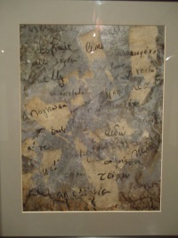
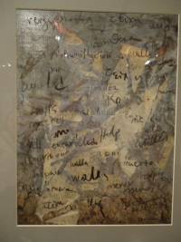
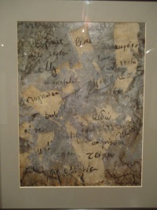
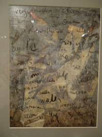

|
Without any thoughts, without any mercy, without any shame they have
cruelly built those walls.
Those walls have left us outside of our boarders, out of the boarders
of our soul, our countries, and our inner world. They are the
limitations that other countries have put with force on us. Social,
cultural, national, economical limits which control our lives. The
people are not free as they would like to be or they think they are,
as their freedom depends on the economical powers.
As soon as people realize they are surrounded by these invisible
walls, they feel imprisoned. They never saw it coming, there were no
signs. Out of the sudden, they faced the cruel reality. The walls, the
boundaries were always there but they have never took a moment to see
close enough. Now, after they got more mature from all the
difficulties, can understand what is really happening around the
world. The walls are now visible.
|
|
 


